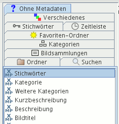

Im Kartenreiter Ohne Metadaten finden Sie Bildern, denen noch keine Metadaten zugeordnet wurden, beispielsweise Bilder ohne Stichwörter oder ohne Kurzbeschreibung.

Es gibt kein Kontextmenü für diesen Kartenreiter.